写在前面
SuperMimic 是 UC Berkeley 的 Qiayuan Liao 等人发表于 CoRL 2026 的工作。[1]
Humanoid 全身控制希望让同一台机器人稳定地执行走、跑、跳乃至翻滚等多种运动。人类动作提供了丰富的行为样本，机器人还需要根据实际姿态、速度和接触情况调整关节指令。如何把动作数据变成能在真实身体上运行的反馈控制器，是这些工作共同面对的问题。
围绕这一问题，以 SONIC 为代表的 model-free RL（MFRL）已经形成了一条成熟路线：在大规模仿真中采样，用运动跟踪奖励训练策略。[8] Model-based RL（MBRL）则尝试学习动作之后身体怎样变化，再利用这个模型优化策略。同一身体执行不同运动时，学到的动力学可以反复用于训练；模型还能够提供动作影响未来的局部梯度。这让 MBRL 在训练效率上很有吸引力，也引出了模型误差、接触与长期求导等困难。
SuperMimic 沿着这条路线，把共享动力学、短时优化与长期价值估计用于大规模 humanoid 控制。读懂它，也就有机会重新理解 MBRL 为什么自然、为什么难，以及怎样在这个任务上做得好。借一句玩笑话，可谓 Make MBRL Great Again。
这篇笔记从 humanoid 控制的技术积累出发，沿同一个长期回报目标推导 PPO 与 BPTT，理解二者的优化性质与 MBRL 遇到的困难。随后回到 SuperMimic，学习模型拟合、短时 actor–critic、数据覆盖和部署接口的设计，再结合原论文实验理解训练效率与恢复行为。最后讨论这里的身体动力学模型，与机器人操作任务中的外部世界模型有什么联系。
SuperMimic 原论文图 1。一个共享的可微世界模型用于训练多技能全身控制策略。[1]
1 两条策略训练路线
在 Humanoid 全身运动控制中，目前主要有两条策略训练路线。Model-free RL（MFRL）通过物理仿真采集轨迹，根据回报更新策略，PPO 是其中最常见的方法。Model-based RL（MBRL）则尝试学习机器人的动力学模型，再利用模型预测运动，并通过动力学反向传播来优化策略。两者解决的是同一个问题：如何将人类运动数据转化为能够在真实机器人上执行的反馈控制器。
这一任务的发展离不开动作数据、物理仿真和真机部署等方面的积累。DeepMimic 较早展示了如何利用运动捕捉数据和强化学习训练模仿策略。[2] 后续的 H2O 解决人体动作向机器人重定向与可执行性筛选的问题，ASAP 通过真机数据修正仿真中的动力学差异，Hold My Beer 研究上下肢不同控制目标与频率的协调，BeyondMimic 则进一步改善多种高动态动作的跟踪与部署。[4], [5], [6], [7] 与此同时，GPU 并行仿真大幅加快了 PPO 的训练。[3] 这些进展逐渐使大规模动作库的学习与真实执行成为可能。
SONIC 是这条发展过程中的一个重要转折点。它同时扩大动作数据、网络容量和训练计算，训练出能够覆盖广泛运动的单个通用跟踪器。[8] 这说明以 PPO 为代表的 MFRL 已经能够处理大规模 Humanoid Motion Tracking，也使它成为这一任务上非常有竞争力的主流方案。不过，这种规模化依然需要昂贵的训练成本。SuperMimic 所比较的 SONIC 已发布模型使用 128 张 L40 训练 168 小时，约合 2.15 万 GPU-hours。[1] 当动作库扩展到数百小时，如何提高策略训练的计算效率，就成了一个值得重新考虑的问题。
另一条 MBRL 路线其实也一直在发展。早在 2021 年，SuperTrack 就尝试从模拟器转移中学习可微动力学，通过模型展开和反向传播训练动作跟踪器。[9] 后来的 SuperDyno 将这一思路扩展到更大的动作库。[10] 与 PPO 主要利用采样回报估计策略梯度不同，这些工作希望进一步利用每次状态转移中的动力学信息，直接计算动作变化对未来回报的影响。
SuperMimic 延续了这条路线，将共享的可微动力学模型、短时策略优化和价值函数结合，用于大规模 G1 全身动作跟踪。[1] 因此，理解 SuperMimic 的关键之一，就是理解 PPO 与可微动力学究竟如何使用同一段运动轨迹，以及两种梯度更新各有什么优势和困难。下面从共同的累计回报目标出发，分别推导 PPO 与 BPTT。
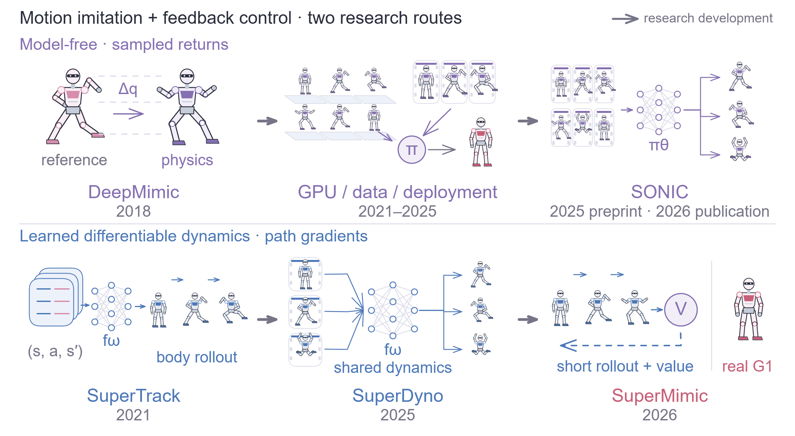
2 MFRL
前面的 motion tracking 任务，最终需要把参考动作、平衡与恢复这些要求变成策略的训练信号。MFRL 的做法是让机器人在模拟器中尝试动作，根据整段运动的回报调整策略。以 PPO 为例，我们先从它优化的目标出发，看每一步动作怎样接收到长期评价，以及这条统计路径为什么适合大规模仿真训练。
2.1 累计回报与策略目标
跟踪误差可以逐步计入奖励，落地或跌倒的后果则可能在许多步之后才出现。把这些评价放在一起，策略优化的目标就是整个运动过程的累计回报。设 为环境状态， 为动作， 为执行动作后的奖励， 为折扣。策略参数为 ，环境转移为 。这里的状态包含目标信息与预测后续所需的历史；有限时域下也包含时刻。策略希望最大化
轨迹 的概率分解为
这里 可以来自刚体物理模拟器。策略参数影响动作的采样概率，并通过动作改变后续状态的分布。
策略决定怎样尝试动作，模拟器给出这些尝试的后果。以连续控制中常见的高斯策略为例，网络输出 与 ，它们定义 ；动作再从这个分布中采样。每次执行会得到一条轨迹与一个累计回报，因此可以用多次交互的平均值估计目标。对 条独立轨迹，经验均值
在回报可积时依大数定律收敛到 ；有限方差时，其方差为 。策略网络给出了动作的概率分布，采样则让我们估计这个分布在环境中产生的实际回报。
2.2 策略梯度与 advantage
有了回报样本，下一步是把它变成参数更新方向。策略梯度从轨迹出现的概率入手：高回报轨迹中的动作应当更容易被选中，低回报轨迹中的动作则相反。利用恒等式 ，将目标求导：
最后一步来自环境转移对 没有显式依赖：轨迹的 log probability 中，只有策略项需要求导。碰撞、摩擦和落地的影响已经体现在采样回报里，优化时计算的是策略网络怎样改变这些动作的概率。
整条轨迹的回报还混合了动作 之前和之后的结果。由于这个动作只能影响之后的奖励，把奖励按时间拆开，过去回报与当前 score 项的乘积期望为零，便得到 reward-to-go 形式
的条件期望是动作价值 。不过，当前状态本身就可能使所有动作都得到较高或较低的回报。为了更清楚地评价当前动作带来的改善，可以减去一个只依赖状态的 baseline 。这不会改变梯度的期望，因为
状态价值 表示从当前状态出发、按当前策略继续行动时的平均累计回报；减去这个平均值，就能评价选中动作比通常的后续表现好多少。取 ，便得到 advantage 及策略梯度
蓝色项给出提高当前采样动作概率的参数方向；紫色 advantage 的正负决定沿这个方向还是反方向更新，大小则为更新加权。这个评价可以包含很远以后的落地、恢复或任务成功。
例如起跳后两秒才出现落地奖励， 仍将这项奖励带回起跳动作。奖励跨越时间的方式，是进入 return 和 advantage；参数梯度本身沿策略网络反传。这个结构解释了 model-free 策略梯度怎样使用长期结果。[11], [12]
2.3 TRPO 与 PPO
上述梯度是在当前策略的轨迹分布下计算的。实际训练希望一批采样支持多次更新，而第一次更新后，策略就已经发生变化。要继续使用这批数据，需要描述新旧策略对同一个动作赋予的概率差异。记采集数据的策略为 ，新策略为 ，单步概率比为
在同一状态下，importance sampling 将对新动作分布的期望改写为旧动作分布下的加权期望：
单步概率比处理的是同一状态下动作分布的变化；连续控制还要考虑新策略会把机器人带到哪些状态。无限时域下，令 ，performance difference identity 给出
以 近似更新后的状态分布，便得到局部 surrogate。TRPO 在优化这个 surrogate 时，限制新旧策略的平均 KL 距离：
更新幅度受到约束时，旧数据对新策略的评价更有用。PPO 将这一更新控制写成便于 minibatch 优化的 clipped objective：
当 ，该样本希望提高动作概率； 后，继续提高概率不再增加其 clipped 收益。当 ，该样本希望降低动作概率； 后，相应收益同样变平。由此削弱对旧样本过度优化的动力，并允许多轮 minibatch 更新。clip 操作作用在优化收益上。[12]
这样，同一批轨迹既提供各步动作的长期评价，也能支持多轮 minibatch 优化；clipped objective 用来控制反复利用旧样本时的更新幅度。
2.4 策略梯度的训练性质
式 (2.6) 把策略更新分为”概率变化方向”与”回报评价”。物理后果通过样本回报进入评价，所以接触切换、终止阈值等环境事件可以直接影响动作概率。随机策略还会采到当前均值之外的动作。若一个有用行为每次出现的概率为 ， 次独立尝试至少观察到一次的概率是 。
这条路径也适合利用 GPU 仿真：不同环境可以同时采集轨迹，策略更新从大量回报样本中估计方向；baseline、估计状态价值的网络（critic）和 advantage estimation 则帮助减少统计波动。长期结果通过 advantage 进入更新，策略网络的反传也不需要穿过整段物理过程。
总结以上讨论，PPO 的主要性质有以下三点：
并行效率。多个仿真环境可以同时采集轨迹，策略更新无需沿整段物理动力学反传，适合大规模 GPU 仿真训练。
训练稳定性。baseline 与 critic 有助于降低梯度估计的波动，clip 抑制对旧样本的过度优化，使策略能够较稳定地迭代。
探索与长期评价。随机策略能够尝试当前均值之外的动作，advantage 则将后续回报带入当前动作的评价。
与此同时，每一个方向仍要从动作尝试与回报差异中辨认。高维动作包含许多变化，远期回报又混合了中间各步的影响。MBRL 尝试利用模拟器中共同的身体动力学规律，直接计算动作变化对回报的影响，从每条轨迹中获得更具体的优化方向。
3 MBRL
PPO 通过重复尝试，统计哪些动作变化伴随着更高回报。如果能预测身体在动作之后怎样运动，并对这个预测求导，我们就可以沿着动作、状态和奖励之间的关系直接计算改进方向。这是可微 MBRL 提高训练效率的出发点：用模型复用已收集的转移经验，再让一次 rollout 提供局部方向信息。
3.1 动力学模型与策略优化
要得到这条可微路径，首先需要一个能够预测下一状态的模型。考虑确定性控制器 。从模拟器收集状态、动作及下一状态，学习
其中 是动力学模型参数， 是策略参数。模型训练改变 ，使预测接近模拟器；策略训练暂时固定 ，使模型内回报提高。两个优化问题使用同一批交互经验，但目标和求导变量各自明确。
模型拟合后，就可以在模型内试运行控制器。令 为本次显式展开的长度。从记录的状态 出发，模型与策略轮流执行：
先只累加这 步的模型奖励，得到一个窗口内目标；当 短于完整运动时，窗口之后的回报还需要另外接续。当前窗口内的 imagined objective 为：
PPO 与模型内策略优化都追求运动的累计回报，当前写出的模型目标计算的是显式窗口内的部分。策略参数通过每一步动作影响后续状态，对这张时间展开的图应用链式法则，就得到 backpropagation through time，即 BPTT。模型的状态预测让 rollout 能继续，局部 Jacobian 则告诉策略怎样改变动作。SVG、SuperTrack 等工作都利用了这类可微路径。[14], [9]
3.2 闭环 BPTT
为了看清一个参数的变化怎样传到未来，先记下每一步状态对策略参数的总导数。设状态、动作和参数的维数分别为 。定义
所有偏导均在当前轨迹的状态与动作处取值。本节标量函数对向量的偏导按行 Jacobian 记，其转置给出参数的列梯度。策略参数有两条路径改变 ：直接改变策略输出，以及先改变此前状态、再经策略反馈改变动作。因此
将它代入状态转移的导数，得到
记 ，。 是闭环状态传播： 描述状态直接怎样传到下一步， 描述状态通过控制器改变动作后怎样传到下一步。 则是本步策略参数向动力学注入的新影响。
数据起点对本轮参数固定，故 。反复展开递推式，有
空乘积为单位矩阵。对于 ，其导数为
于是 由这些奖励导数的折扣和构成。计算时自动微分通常按反向顺序传播向量乘积；上面的前向敏感度递推更清楚地展示了同一组依赖关系。
若单独考察一次动作干预 对最终状态的影响，并让后续控制器继续反馈，则
这条式子把”起跳怎样影响落地”写成了局部影响的连乘。每一步都会重新缩放、旋转这份扰动；后面讨论的长期传播问题，直接发生在这一项中。
这些局部导数也改变了一条轨迹能够提供的优化信息。式 (2.6) 根据采样动作的 advantage 调整其概率，BPTT 则计算动作变化引起的回报变化。把问题缩为一次标量动作，设固定标准差为 ，策略参数 控制动作均值，回报取线性形式：
取 作为 baseline，并假设模型已准确学得斜率 。在 PPO 更新起点，score 估计与路径求导分别给出
由 、，得到
两种估计的平均方向相同；对 个独立 score 样本取平均，方差降为 ，而这个线性例子的路径求导一次就给出方向 。差别来自模型保存了动作与结果之间的局部关系，求导时能够直接使用这份关系。多步系统中的 BPTT 将这些局部关系沿时间连接，使一次 rollout 提供各步动作影响后续回报的方向。[14] 模型的转移和导数误差也沿这条路径进入更新，下一章将具体分析。
动力学拟合需要额外计算；给定状态、动作与物理条件后，转移规律不随采集策略改变，过去经验仍能用于监督模型。同一身体的动力学又能在不同运动与多次策略更新中复用，将拟合成本分摊到后续训练。模型内生成新转移减少了再次调用模拟器的需求，路径求导则有助于减少估计更新方向所需的 rollout。模型每一步算得多快、达到目标回报需要多少步，分别对应计算吞吐与样本利用效率；后文图 7 对这两项进行了比较。[1]
3.3 物理延迟与信用分配
上面的连乘之所以必要，是因为动作常常先改变速度，再改变位置，最后才影响跟踪误差或落地奖励。用一个简化的加速度控制系统说明：
其中 是时间步长。保持后续动作固定，有
动作先进入速度，再进入位置。只看下一步位置奖励时，这条影响尚未到达评价变量；展开到后续位置后，链式法则就能表达它。位置对时间的二阶动力学，由多步一阶导数组织起来。
Humanoid 中的接触进一步改变作用路径。腾空时，关节内力能改变身体构型与转动分布；质心平移则由外力决定。某个关节动作对当前质心加速度的导数可以为零，却通过落地姿态影响下一次接触和后续回报。评价时域与所选状态变量，决定了当前目标能看到哪一段作用链。
于是，两条路线把长期后果传回动作的方式变得清楚了：PPO 将后续奖励汇入动作的统计价值，BPTT 将中间状态展开，并沿局部导数逐步传播。可微模型能够提供更细的方向信息；接下来要理解的是，这些方向在模型预测、长期传播和接触边界处会遇到什么困难。
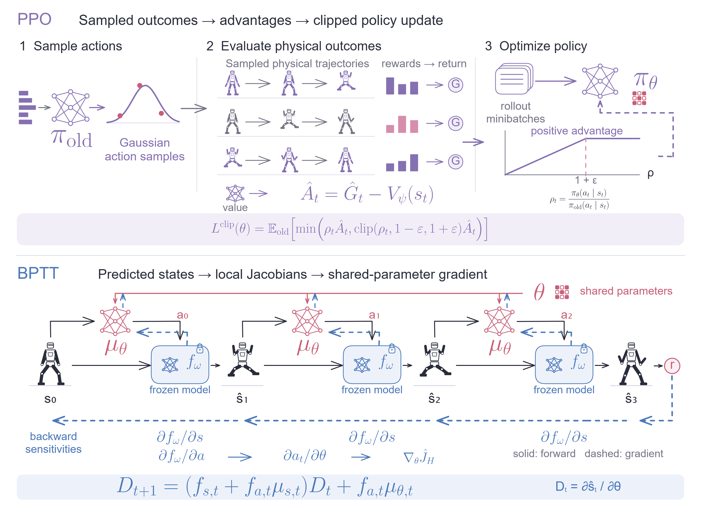
4 BPTT 分析
BPTT 的方向来自模型给出的局部变化，再通过时间展开传到奖励。模型拟合偏差、长程 Jacobian 和接触边界，因而都会进入策略更新。沿着这条计算链逐项检查，就能理解为什么一个自然的建模思路，需要专门的训练设计才能用于控制。
4.1 模型误差与导数误差
先看模型学到了什么。动力学拟合通常是监督学习：输入 ，其中 记录摩擦等已知物理条件；目标为下一状态 ，平方损失训练点预测 。对固定输入，把条件均值记为 ，则
交叉项为零，第一项与预测 无关，因此最优预测是
因此，MSE 将输入中尚未确定的信息压缩为条件均值。若同一个输入背后混有左右两种滑动结果，均值可能位于两者中间。将这个中间状态当成实际未来再 rollout，会让下一次接触与奖励在错误位置发生。其根源可写为
例如 以相同概率取 或 ，；均值状态的奖励是 ，实际分布的期望奖励是 。原本存在于分支中的结果，被点预测压到一个后续非线性计算无法正确处理的位置。
平方损失对应的统计假设也可以直接写出来。若选择固定协方差的高斯输出
其负对数似然为
因此 MSE 与这一 Gaussian NLL 对应。连续分布还可用其他似然形式；二元终止变量则自然对应 Bernoulli 分布与 BCE。模型的状态表示和条件输入，决定了一个简单点预测需要承担多少隐藏不确定性。
这使模型输入的选择成为关键。对于给定完整状态、动作与物理参数的确定性模拟器，转移本身可以是单值映射。把已知摩擦、标定偏移等条件提供给模型，就能减少由隐藏条件混合而来的多种结果。确定这个条件关系之后，模型仍需要通过数据拟合具体的转移数值。
回到上一章的 BPTT 公式，策略更新还要使用 和 。监督损失评价预测值与真实值的距离，这些 Jacobian 评价的却是邻近状态和动作怎样改变预测。两者可以有很大差异。考虑
其函数误差满足 ，而
很小的振幅可以伴随很大的斜率。对 BPTT 来说，模型既要使轨迹落在合理位置，也要在附近给出能够引导动作改进的方向。
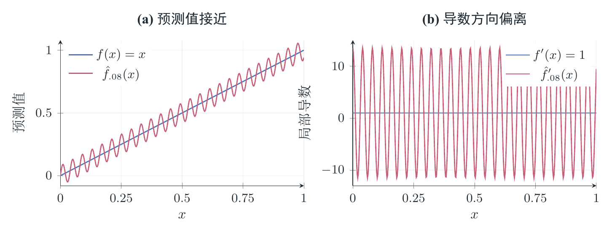
以上误差发生在 learned model 与训练它的模拟器之间。最终让机器人执行动作时，还要把模拟器与真实身体之间的差距接上。在同一状态与动作处，令 与 分别为模拟器与真实系统的转移，则
监督拟合直接处理第一项；参数辨识和真实交互数据用于修正仿真动力学，随机化训练则让策略适应一族物理条件。前面介绍的 ASAP 就在处理后一层差距。对可微 MBRL 来说，模型内优化和真机部署由这两层近似连接起来。
4.2 长程 Jacobian 与梯度传播
局部模型给出的方向，还要穿过后续许多步才能评价一次起跳或恢复动作。式 (3.4) 中的 正是这条传播链。其范数有上界
沿某个方向反复收缩时，远期信号到达早期动作后会很弱；反复拉伸时，轨迹与导数误差也会被放大。多维系统还会持续改变敏感方向。接触使这些局部映射随状态快速变化，长展开因此同时增加计算、模型误差累积和梯度不稳定的负担。
以起跳与落地为例，起跳动作对最终成败可以有很大的因果影响。梯度计算需要在当前轨迹附近，逐步追踪这一影响怎样穿过速度、姿态、接触和后续反馈。若某一段把相关方向强烈压缩，落地的奖励就难以通过数十次局部乘积形成稳定的起跳更新；若接触处剧烈放大，更新方向又可能对微小变化异常敏感。
短展开减轻了这条链的负担，同时提出一个新的价值估计问题：窗口结束之后，当前状态还意味着多少未来收益？SHAC 用终端 critic 来回答这一问题：
其中终端项贡献的策略导数为
critic 把后续回报压缩为终点状态的价值函数，BPTT 的动力学链在 步处结束。对暂未落地的机器人，躯干朝向、角速度和脚部位置可以成为未来稳定回报的预测变量。critic 学到这些关联后，终点处的价值斜率便能引导窗口内动作。[15]
4.3 接触阈值与梯度估计
接触切换与终止还带来另一种局部问题：动作变化可以让更多样本跨过成功边界，而单条样本在边界两侧的奖励斜率都为零。用一个只有一步的任务，就能看清这种梯度信息的遗漏。考虑带高斯随机性的动作与阈值成功奖励：
先从成功概率计算期望目标，可得
其中 为标准正态的 CDF 与密度。参数右移后，更多概率质量跨过成功边界，成功率随之提高。
逐条样本做普通路径求导时，阈值函数的导数几乎处处为零：
而对动作密度求导，得到 score-function 表达式
两种计算的差异来自硬阈值处的边界贡献：参数移动会改变跨过边界的概率质量，这部分变化在逐样本普通导数中消失了。因而，即使模型准确预测了每个动作的奖励，直接对该预测求导也可能遗漏期望目标的变化方向。Suh 等人的分析把不连续边界、陡峭接触与梯度估计质量联系起来。[16]
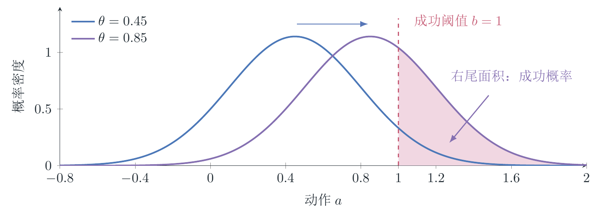
这一差异会改变实际训练方向。加上动作代价，设 ，则
取 、。当成功概率带来的收益超过代价时，真实目标希望加大动作；遗漏边界贡献的梯度却持续减小动作。训练可能因此停留在节省动作、无法跨过成功边界的行为上。
连续而陡峭的接触过渡呈现另一种采样困难。设 ，则 。过渡区变窄时，落入其中的样本更少，区间内的导数却更大。有限 batch 可能长期只看到平坦区，偶尔才遇到承载大量期望的大梯度。Suh 将这类有限样本典型估计失真与 stiffness 联系起来；AHAC 则自适应调整展开时域，减少梯度穿越陡峭接触段的负担。[16], [17]
长期连乘与接触边界，对应了前作中的两条改进思路。SHAC 用终端价值表示远期回报，缩短动力学传播链；Suh 等人则根据估计质量混合路径梯度与 score 梯度，形式为 ，改变梯度信息的来源。后面读到 SuperMimic 的短时 actor–critic 时，就能看到它怎样使用前一种思路。
4.4 数据覆盖与探索
以上讨论都从一条已有轨迹出发，检查沿轨迹计算出的梯度。训练还需要回答更早一步的问题：机器人有没有尝试到有用的行为，模型有没有见过相应的转移？模型的监督范围直接由数据分布确定：
replay buffer 决定模型见过哪些转移。若站立与正常行走样本丰富，而单脚滑动、失衡落地和迈步恢复很少，模型在后面这些区域就缺少监督。策略在模型内优化后，又会改变下一轮采集分布。模型与策略通过这个循环共同塑造可学习的行为范围。
模型内的局部优化则决定策略怎样从当前行为走向更好的行为。局部梯度描述的是当前轨迹附近的变化。迈出一大步能够恢复平衡，但当前动作附近的微调可能暂时增加能耗或跟踪误差，局部更新就难以到达这条新路径。SuperDyno 的讨论中仍将防跌倒 stepping 的发现列为困难。[10] 模型准确性、行为覆盖与局部优化在这里相互影响。
因此，数据采集也是 model-based 训练的一部分。随机动作扩大模型见过的动作邻域，参考状态重置让训练覆盖运动的不同阶段，困难片段采样增加薄弱区间的练习；critic 则把后续结果反馈给当前状态。到这里，SuperMimic 需要处理的训练环节已经逐一出现：持续补充转移、拟合可用的短时模型、用价值函数连接长期后果，再把策略带回模拟器检验和采集。
总结以上讨论，可微 MBRL 的主要性质有以下三点：
动力学复用与样本效率。同一套身体动力学可服务多种动作和多次策略更新；模型导数直接提供动作改进方向，提高交互数据与 imagined rollouts 的利用效率。
数据覆盖与探索。探索不足会使关键状态和动作缺少模型监督；模型内的局部梯度更新，也较难发现远离当前行为的新动作。
梯度质量与估计偏差。模型及其导数的误差会影响更新方向，长程连乘可能导致梯度消失或爆炸；硬阈值处，逐样本求导可能遗漏跨边界的概率质量变化，产生有偏估计。
5 SuperMimic
前面的推导说明，可微动力学通过模型导数提供动作的优化方向，模型的训练范围、预测误差和梯度传播长度都会影响这个方向。SuperMimic 围绕这些问题组织训练：策略持续回到模拟器采集数据，模型在短窗口内接受多步预测监督，actor 在较短的动力学链上改进动作，窗口外的收益交给 critic。
5.1 交替训练与经验回放
策略在训练中会从站立走向跑跳，也会进入失衡和落地状态。模型需要不断获得这些新区域的转移，才能继续为策略提供有用的后果预测。SuperMimic 让策略、世界模型与 critic 在同一个循环中交替改进，三组参数分别记为 。物理状态 产生本体感知观测 ；目标 默认来自参考运动，也可对应其他目标接口。确定性 actor 根据观测与目标输出归一化关节设定值：
actor 决定下一轮会访问哪些状态，模型学习这些状态中的动作后果，critic 估计继续控制的长期回报。三者通过图 5 中的数据循环连接起来。[1]（§3）
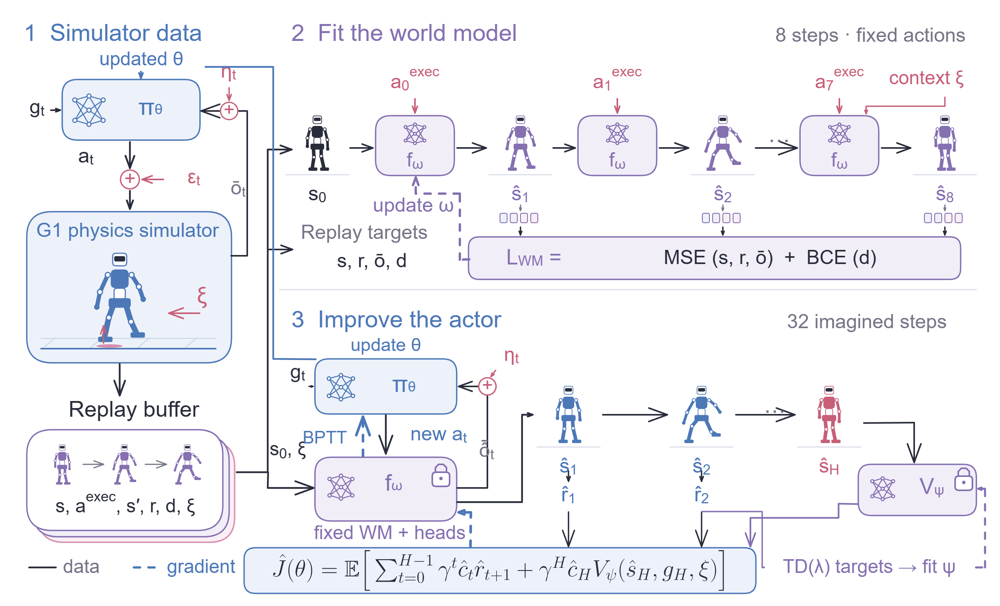
每轮先让当前 actor 在物理模拟器中采集转移。执行动作可加入噪声 ，replay buffer 记录实际执行的 及其后果，供模型拟合使用。随后，从记录状态启动 imagined rollout，让当前 actor 在模型中产生新动作、得到奖励，再通过冻结的模型优化 actor，并拟合 critic。更新后的策略返回模拟器，补充它现在会遇到的状态与动作。
replay 同时保留较早的经验。给定状态、执行动作与物理条件后，历史策略和当前策略遵循同一转移规律，因而旧数据仍可用于动力学监督；新的数据则把模型拟合带到策略正在扩展的区域。这一 Dyna 风格的交替过程，将模型的数据覆盖与策略改进放在了同一条反馈链中。[18]
5.2 世界模型与多步监督
数据进入 buffer 之后，接下来的问题是模型怎样学会连续使用自己的预测。单步误差会改变第二步的输入，并继续影响后续接触与姿态；模型训练也需要看到这条累积过程。为支持完整的控制 rollout，世界模型提供动力学、奖励、观测和终止四个接口：
其中 是每个 episode 的物理上下文，包含摩擦、关节标定偏移和躯干质心偏移。同样的姿态与动作在不同摩擦下会产生不同后果；将已知的 输入模型，就能按条件拟合这些转移。能够从状态解析计算的 head 直接计算，其余 head 学习预测。
设 replay 窗口为 。模型从 开始，后续状态全部由自身预测：
动作沿日志固定，状态则自回归。后面各步的误差因此也会训练前面的预测，让模型学会从自身产生的输入继续推进。拟合目标为
解析 head 对应的损失项省去。连续状态、奖励和无噪观测用数值回归，终止标签用二元交叉熵。这里的 规定模型接受监督的日志窗口；后面的 则规定 actor 使用模型获取梯度的长度。前者让训练暴露多步预测偏差，后者决定一次策略更新要穿过多长的动力学链。
传感器噪声承担另一项工作：让 actor 习惯实际反馈中的扰动。模拟器中已知其采样方式，因而可以把它从动力学拟合中分开：
模型先预测无噪观测，再在外部采样传感噪声送给 actor。这样，物理变化通过 进入转移条件，传感变化通过 进入控制器输入。模型集中拟合给定条件下的身体转移，actor 则学习根据带噪反馈持续控制。
5.3 短时展开与终点价值
有了多步模型，策略优化仍要面对长程 Jacobian 的连乘。SuperMimic 在每次更新中只显式展开一段短轨迹，并由终端 critic 接续未来回报。展开从 replay 状态和对应 出发，每一步接收加入噪声后的预测观测。模型参数 在本轮 actor 更新中固定，状态与动作 Jacobian 继续参与反向传播。
短窗口还可能穿过失败边界。先用累计生存权重表达终止后的奖励关闭。模拟器日志中的 ，累计生存权重定义为
在模型 rollout 中，将二值 换成预测概率 ，代入同一递推，得到连续的生存权重 。由此，终止风险可以随状态变化进入想象回报及其梯度。真实模拟目标写为 ；模型内的 actor 目标则为
默认 ，控制频率为 Hz，对应 秒。蓝色项通过窗口内的动力学计算奖励，紫色项由 预测窗口之后的累计回报。actor 因而能通过终点价值学习更远的后果，同时将显式动力学反传控制在三十二步内；生存权重则使两部分都计入终止风险。
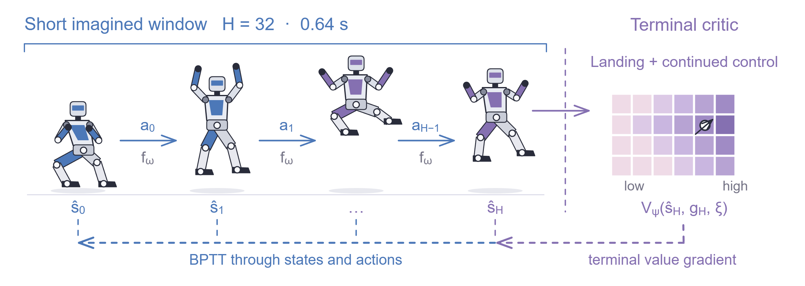
对起跳动作而言，窗口结束时机器人可能还在腾空。终点处的姿态与角速度已经包含落地线索，critic 要把这些线索映射为后续回报，形成图中返回窗口的价值梯度。参考运动描述希望跟踪的目标，critic 则评价从当前实际状态继续控制的结果；暂时接近参考、随后难以恢复的姿态，也会通过后续回报影响价值。
5.4 终止风险与生存权重
前章的阈值例子显示，对硬阈值逐样本做普通求导，会遗漏概率质量跨越边界的贡献。在 SuperMimic 的 imagined objective 中，连续终止头让”还能获得多少未来回报”随预测终止概率改变。令窗口内递推回报为
展开 就得到式 (5.4) 中的单条轨迹目标。求导后出现三项：
最后一项按后续价值 衡量终止概率变化的影响：后续价值为正时，提高终止概率会降低目标。连续终止头因此把接近失败边界所损失的未来收益纳入模型梯度。转移到终止状态的当次奖励仍乘此前的 ，终止后的奖励才由后续权重关闭。
终止头提供延续风险的导数，learned dynamics 提供接触与运动后果的导数。再加上每一步的跟踪奖励，actor 在尚未完成整段动作时，也能从姿态误差与未来收益中获得更新方向。这些代理随模拟器数据持续拟合，并在短窗口内用于策略优化。
5.5 Critic 与多步回报
终点价值怎样学到落地与恢复的收益，取决于它接受的训练标签。SuperMimic 从 imagined transitions 中向后计算多步 return，把窗口内的奖励与更远的价值估计结合起来。记 、，论文使用 -return：
取 时，下一状态价值直接构成一步 bootstrap；取 时，奖励沿窗口累积到末端，再用 接续。中间取值将不同长度的标签混合起来。默认 。
这组多步 return 还与 PPO 常用的广义优势估计（GAE）相连。令 ，则
继续展开，得到
右侧按时间与生存权重加权的逐步 TD 误差给出 ，即多步优势估计；加回 ，就得到 critic 拟合的 return 标签 。SuperMimic 据此拟合
其中 表示本轮拟合中固定的目标。标签每次 rollout 计算一次，用来更新 critic 参数；actor 更新时固定 ，保留价值对终点状态的导数。多步 return 负责把后续奖励带入价值标签，BPTT 再沿这个价值的斜率改进窗口内动作。[13], [15], [1]
5.6 数据采样与部署接口
模型与价值都要从访问过的状态中学习，因而最后还要回到前章的覆盖问题。参考动作提供了起跳、转体与落地的时间结构，密集奖励逐步衡量跟踪误差；训练采样则决定哪些阶段获得多少练习。SuperMimic 把动作时间轴按一秒分 bin，维护每个 bin 的回报 ，当前困难分布写为
reset 由 均匀采样、 当前困难分布和 历史困难分布混合。若一段翻转已经能起跳，却经常在落地前失败，较低的局部回报会增加这一时段的练习机会；均匀项维持整库覆盖，历史项保留对曾经困难片段的练习。模型 imagination 再从 replay 抽取起点，把这些模拟器实际访问过的状态用于短窗口优化。
时间轴采样增加不同阶段的覆盖，采集期动作噪声则增加同一状态附近的动作覆盖，默认 。这些实际执行的带噪动作进入模型监督，actor 则沿当前确定性策略的想象轨迹反传。
这套数据与模型循环还需要接到真机可获得的输入。模型和 critic 在训练时可使用完整状态与 ，actor 使用最近十帧本体感知和未来十帧参考。物理随机化覆盖摩擦、关节偏移与质心偏移；传感噪声覆盖关节位置、速度、IMU 角速度和投影重力。前者让策略面对不同身体与接触参数，后者让策略适应反馈扰动；训练中可读取的特权信息留在模型与 critic 一侧。
策略输出转换为关节设定值 ，再由低层 PD 执行。真机控制路径运行 actor 与关节控制器，world model 和 critic 承担训练计算。论文使用平地模拟环境，并去掉了训练期突发 root-velocity pushes：这类未作为输入记录的状态跳变会干扰确定性转移拟合。推扰恢复随后在独立测试中评价。
至此，前章的几条困难都有了具体的处理位置：replay 循环与多步拟合追踪模型误差，短展开与 critic 缩短动力学梯度链，连续生存权重表达终止风险，参考、重置与动作噪声改变数据覆盖。下一步需要看实验：这些设计是否减少了训练计算，critic 是否改变了窗口之外的行为，以及同一个模型在动作库扩大后是否仍然有用。
6 效果
6.1 训练效率与动作规模
在大动作库上，SuperMimic 使用 小时公共动作数据，在单张 H100 上运行完整训练循环三小时后，normalized return 超过 SONIC 已发布的 checkpoint。SONIC 报告的训练配置是 小时数据、 张 L40、 小时；论文的千倍 GPU-hours 结论对应这组系统比较。两张 H100 训练 小时后，SuperMimic 在统一终止条件下评价的 条训练动作中达到零失败。[1]（§4.1, App. F） 这里的 normalized return 将未折扣奖励和按完整参考片段的最大奖励和归一化，提前终止会降低分数。
同一 H100 上，模型在实际使用的 – 并行规模内，rollout 吞吐比 MuJoCo Warp 高十倍以上。在相同 learned world model 内，analytic update 用约 的 imagined steps 达到 PPO-WM 的最佳训练回报，见图 7。动作库从 小时扩展到约 小时后，归一化的八步状态预测误差仍保持在 – 区间。[1]（§4.2, Fig. 3）
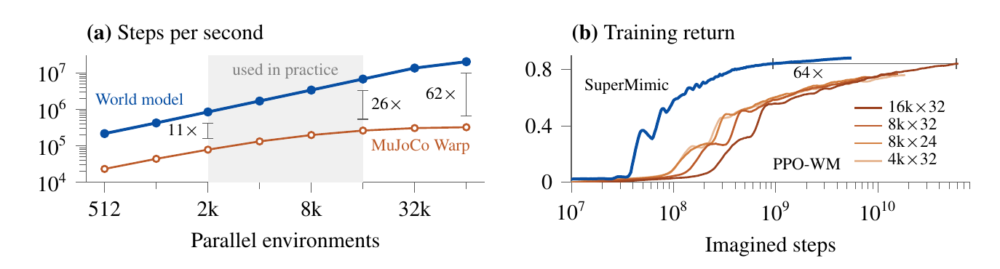
6.2 时域消融与推扰恢复
图 8 给出了相同任务设置下的 PPO-Sim 对照与时域消融。SuperMimic 约 小时达到 evaluation return，PPO-Sim 在十八小时预算内未达到该值。 时，无 critic 的版本达不到目标回报；加入 critic 后，能达到无 critic、 的水平。默认 配合 critic 最快达到目标，继续加长窗口反而使训练变慢。[1]（§4.3）
两种策略达到相近的正常跟踪回报后，论文对静态 T-pose 施加 – m/s 的速度扰动。有 critic 的策略在 – 秒内稳定；无 critic 的策略在 m/s 扰动后持续踉跄，在 m/s 时跌倒。[1]（§4.3）
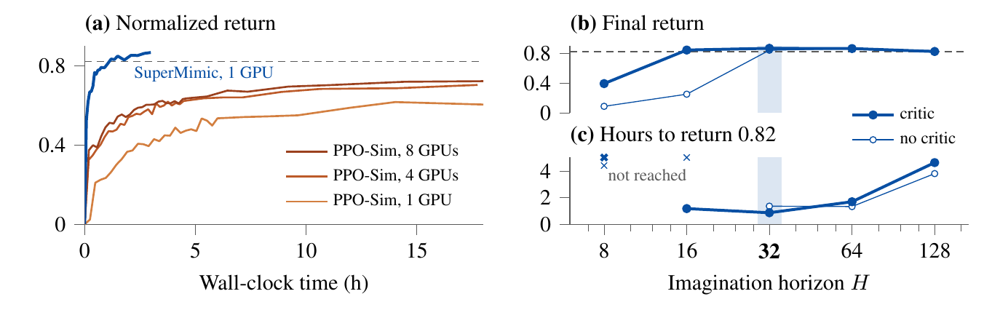
6.3 G1 实机控制
训练后的同一个跟踪器在真实 G1 上执行了跳步、侧滚、 翻转和原地 翻转，未进行逐动作调参。部署时运行 actor 与低层关节控制器，world model 和 critic 留在训练环节。[1]（§4.4）
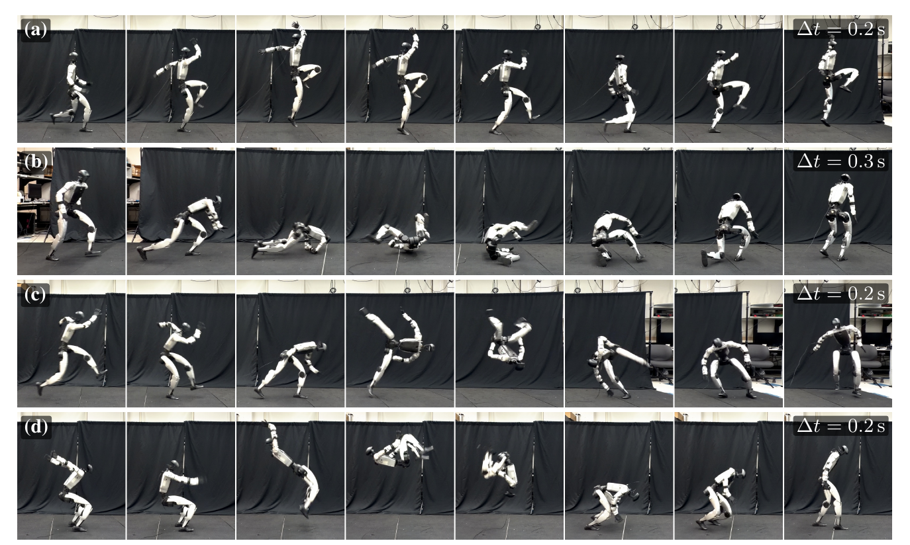
7 复现
本轮采用第三方实现 Uni-SuperMimic，在单张 H100 80GB 上训练 G1 仿真跟踪策略，动作库为 LAFAN1 的 条运动，参考时长约 小时。使用 个并行环境训练 轮，总用时约 4 小时 19 分钟。训练后对参考库逐条从第 帧开始、关闭观测与动作噪声进行完整评测，40/40 条动作全部完成，平均归一化整段回报为 0.833。
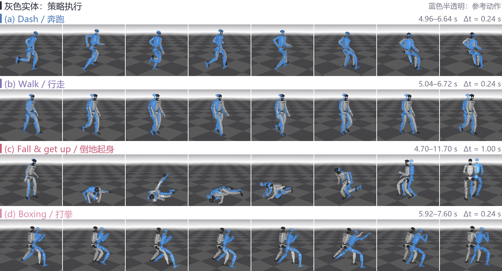
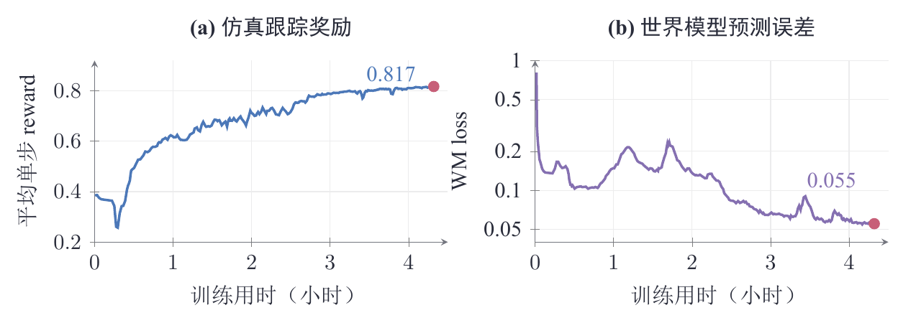
8 Action World 与 WAM
SuperMimic 把动作条件化的身体动力学学得相当好，并将它反复用于控制器训练。这里的 world 主要是同一 humanoid 身体在平地上的姿态、速度与接触变化；增加运动，主要扩大这套动力学的访问范围。[1]（§6, App. E）
当 World Action Model（WAM）走向物体操作，动作后果还会随对象和场景改变：拉抽屉要考虑导轨，拿杯子要考虑支撑与倾倒，视觉又可能遮住接触状态。我们期待看到，WAM 在物体、约束和场景都更复杂时，怎样学到可复用的动作后果，并真正用这些预测改善控制。
A 符号与训练接口
| 符号 | 含义 |
|---|---|
| 模拟器物理状态与模型预测状态。 | |
| actor 的观测与无噪观测；。 | |
| 目标条件与归一化关节设定值。 | |
| 执行动作后的奖励与到达状态的终止标签。 | |
| actor、world model、critic 的可学习参数。 | |
| episode 物理上下文、观测噪声与采集期动作噪声。 | |
| 状态对策略参数的总导数、闭环状态 Jacobian、本步参数注入项。 | |
| 真实与想象轨迹中的累计生存权重。 | |
| 模型拟合窗口、策略想象窗口、折扣与 return 混合系数。 |
表 1正文使用的主要符号。
| 项目 | SuperMimic 默认配置 |
|---|---|
| 模型监督窗口 / 策略窗口 | / ，控制步长 ms |
| 折扣 / -return | ， |
| 模型网络 | MLP，三层、每层 单元 |
| actor 观测 / 运动条件 | 最近十帧本体感知 / 未来十帧参考运动 |
| 策略批次 | 个并行 imagined rollouts |
| 每轮模型拟合 | 十个 batch，每 batch 个 replay 窗口 |
| critic 拟合 | 五个 epoch，每个 epoch 四个 minibatch |
| replay 容量 | 每个环境最近 个控制步 |
| actor 梯度处理 | 全局 norm 裁剪至 ，再逐元素裁剪至 |
| 采集动作噪声 |
表 2对应原论文 Appendix A 与 D。actor 的梯度裁剪作用于 BPTT 导数；PPO clip 作用于式 (2.8) 的概率比收益。
| 类别 | 变量 | 均匀采样范围 |
|---|---|---|
| 物理上下文 | 摩擦系数 | |
| 关节标定偏移 | rad | |
| 躯干质心偏移 | m； m | |
| 观测噪声 | 关节角 / 关节速度 | rad / rad/s |
| IMU 角速度 | rad/s | |
| 投影重力 | 每维 |
表 3模型条件与 actor 输入扰动的具体取值。物理上下文逐 episode 采样；观测噪声在 world model 外加入。
参考文献
[1] Qiayuan Liao, Yiyang Shao, Junfeng Long, et al. SuperMimic: Scaling Humanoid Whole-Body Control with One Differentiable World Model. CoRL, 2026. 项目：https://supermimic.github.io/.
[2] Xue Bin Peng, Pieter Abbeel, Sergey Levine, Michiel van de Panne. DeepMimic: Example-Guided Deep Reinforcement Learning of Physics-Based Character Skills. ACM TOG, 2018.
[3] Nikita Rudin, David Hoeller, Philipp Reist, Marco Hutter. Learning to Walk in Minutes Using Massively Parallel Deep Reinforcement Learning. CoRL 2021; PMLR 164, 2022.
[4] Tairan He, Zhengyi Luo, Wenli Xiao, et al. Learning Human-to-Humanoid Real-Time Whole-Body Teleoperation. IROS, 2024.
[5] Tairan He, Jiawei Gao, Wenli Xiao, et al. ASAP: Aligning Simulation and Real-World Physics for Learning Agile Humanoid Whole-Body Skills. RSS, 2025.
[6] Yitang Li, Yuanhang Zhang, Wenli Xiao, et al. Hold My Beer: Learning Gentle Humanoid Locomotion and End-Effector Stabilization Control. 2025.
[7] Qiayuan Liao, Takara E. Truong, Xiaoyu Huang, Yuman Gao, Guy Tevet, Koushil Sreenath, C. Karen Liu. BeyondMimic: From Motion Tracking to Versatile Humanoid Control via Guided Diffusion. arXiv:2508.08241v4, 2025.
[8] Zhengyi Luo, Ye Yuan, Tingwu Wang, et al. SONIC: Supersizing Motion Tracking for Natural Humanoid Whole-Body Control. Science Robotics 11(117):eaed4592, 2026; arXiv:2511.07820v4.
[9] Levi Fussell, Kevin Bergamin, Daniel Holden. SuperTrack: Motion Tracking for Physically Simulated Characters using Supervised Learning. ACM TOG 40(6), 2021.
[10] Yu Lei, Zhengyi Luo, Tairan He, Jinkun Cao, Guanya Shi, Kris Kitani. Scalable Humanoid Whole-Body Control via Differentiable Neural Network Dynamics. ICLR Workshop on World Models, 2025.
[11] John Schulman, Sergey Levine, Philipp Moritz, Michael I. Jordan, Pieter Abbeel. Trust Region Policy Optimization. ICML, 2015.
[12] John Schulman, Filip Wolski, Prafulla Dhariwal, Alec Radford, Oleg Klimov. Proximal Policy Optimization Algorithms. 2017.
[13] John Schulman, Philipp Moritz, Sergey Levine, Michael I. Jordan, Pieter Abbeel. High-Dimensional Continuous Control Using Generalized Advantage Estimation. ICLR, 2016.
[14] Nicolas Heess, Gregory Wayne, David Silver, Timothy Lillicrap, Tom Erez, Yuval Tassa. Learning Continuous Control Policies by Stochastic Value Gradients. NeurIPS, 2015.
[15] Jie Xu, Viktor Makoviychuk, Yashraj Narang, Fabio Ramos, Wojciech Matusik, Animesh Garg, Miles Macklin. Accelerated Policy Learning with Parallel Differentiable Simulation. ICLR, 2022.
[16] Hyung Ju Suh, Max Simchowitz, Kaiqing Zhang, Russ Tedrake. Do Differentiable Simulators Give Better Policy Gradients? ICML, PMLR 162:20668–20696, 2022.
[17] Ignat Georgiev, Krishnan Srinivasan, Jie Xu, Eric Heiden, Animesh Garg. Adaptive Horizon Actor-Critic for Policy Learning in Contact-Rich Differentiable Simulation. 2024.
[18] Richard S. Sutton. Dyna, an Integrated Architecture for Learning, Planning, and Reacting. SIGART Bulletin 2(4):160–163, 1991.